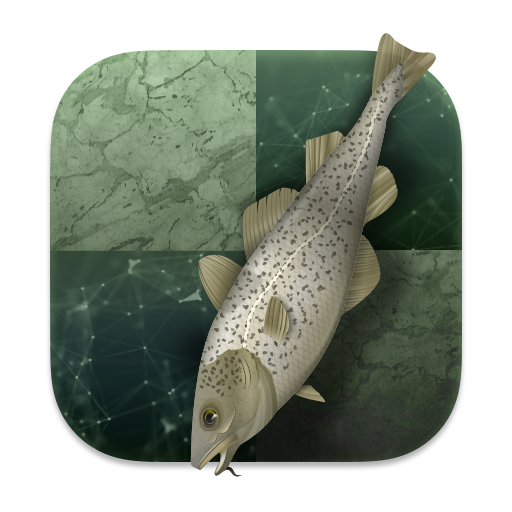

The first section will explore the ratings and top engines over the years.
top chess engine 1986: mephisto mephisto rating 1986:2085 Mephisto rating 1985 : 2017
top chess engine 1987: mephisto mephisto rating 1987:2131 mephisto rating 1986: 2085
top chess engine 1988: mephisto mephisto rating 1988:2155 mephisto rating 1987:2131
top chess engine 1989: mephisto mephisto rating 1989:2227 mephisto rating 1988:2155
top chess engine 1990: mephisto mephisto rating 1990:2262 mephisto rating 1989:2227
top chess engine 1991: mephisto mephisto rating 1991:2259 mephisto rating 1990:2262
top chess engine 1992: chess machine chess machine rating 1992:2320 chess machine rating 1991:2231
top chess engine 1993: chess machine chess machine rating 1993:2303 chess machine rating 1992:2320
top chess engine 1994: Mephisto mephisto rating 1994: 2319 mephisto rating 1993: 2289
top chess engine 1995: mchess mchess rating 1995: 2430 mchess rating 1994: 2313
top chess engine 1996: deep blue deepblue rating 1996:2853 deepblue rating 1995: n/a
top chess engine 1997: deep blue deepblue rating 1997:2853 deepblue rating 1996:2853
top chess engine 1998: deep blue deepblue rating 1998:2853 deepblue rating 1997: 2853
top chess engine 1999: deep blue deepblue rating 1999:2853 deepblue rating 1998: 2853
top chess engine 2000: deep blue deepblue rating 2000:2853 deepblue rating 1999: 2853
top chess engine 2001: deep blue deepblue rating 2001:2853 deepblue rating 2000: 2853
top chess engine 2002: deep blue deepblue rating 2002:2853 deepblue rating 2001: 2853
top chess engine 2003: deep blue deepblue rating 2003:2853 deepblue rating 2002: 2853
top chess engine 2004: deep blue deepblue rating 2004:2853 deepblue rating 2003: 2853
top chess engine 2005: deep blue deepblue rating 2005:2853 deepblue rating 2004: 2853
top chess engine 2006:hiarcs hiarcs rating 2006: 2886 hiarcs rating 2005: 2847
top chess engine 2007: rybka rybka rating 2007:3237 rybka rating 2006: n/a
top chess engine 2008:rybka rybka rating 2008:3224 rybka rating 2007:3237
top chess engine 2009:rybka rybka rating 2009:3225 rybka rating 2008:3224
top chess engine 2010:rybka rybka rating 2010:3217 rybka rating 2009:3225
top chess engine 2011:houdini houdini rating 2011:3238 houdini rating 2010:3204
top chess engine 2012: houdini houdini rating 2012:3250 houdini rating 2011:3238
top chess engine 2013:komodo komodo rating 2013:3262 komodo rating 2012:3233
top chess engine 2014:stockfish stockfish rating 2014:3334 stockfish rating 2013: 3237

top chess engine 2015:houdini houdini rating 2015:3384 houdini rating 2014: 3271
top chess engine 2016:houdini houdini rating 2016:3412 houdini rating 2015: 3384
top chess engine 2017:alphazero alphazero rating 2017:3460 alphzero rating 2016: n/a
top chess engine 2018: Stockfish stockfish rating 2018:3529 stockfish rating 2017: 3452
top chess engine 2019: Stockfish stockfish rating 2019:3633 stockfish rating 2015: 3529
top chess engine 2020: stockfish stockfish rating 2020:3751 stockfish rating 2019:3633
top chess engine 2021: stockfish stockfish rating 2021: 3774 stockfish rating 2020: 3751
please put your favorite engine here, mine is Lc0.
this chart will show the biggest jumps in rating (excluding first year jumps)
- 1.Lc0 3000-3496
- 2.Shredder 3103-3384
- 3.Rybka 3022-3237
- 4.Deep blue 2696-2853
- 5. Fruit 2696-2851
in the next part will see the many types of chess engines
1.neural network
a neural network is a self-learning chess engine that plays millions lf games against itself to get good,the best full neural network engines
include Lc0 Leelenstein alphazero and allie.and maia which is built by learning from millions of 1100-1900 games.
2. hybrids
this is a combination of the alpha-beta search and nnue, the best engine stockfish recently teamed up with Lc0 to become a hybrid
but they are still very rare.
3.alpha-beta
most great engines such as houdini stoofvlees and komodo dragon v2 use alpha-beta,a picture to help is coming
just because engines are great at chess doesnt mean its all good.
there was a scandal that said Rybka had a vast quantity of code from fruit and crafty and houdini is pretty much stockfish
Do You think stockfish is the best chess engine?
The Next Section will include the ratings of the top 15 chess engines!
1.stockfish 13 3724
2.komodo dragon 2 3682
3. stoofvlees ll 3664
4. Lc0 0.26.3 3652
5. Leelenstein 11.1 3627
6. Ethereal 13.00 3578
7.Allie 0.5 3561
8. Rubichess 2.1 3555
9. fire 8.0 3550
10. nemorino 6.00 3550
11. pedone 3.1 3547
12. igel 3.0.0 3545
13. SlowChess Blitz 2.5 3540
14. booot 6.5 3456
15. xiphos 0.6 3455